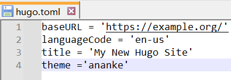

[工具] 记一次Hugo+Github Pages自动部署的艰难险途
关于博客，我捣鼓了很多次，比如在2017年尝试过手写界面和JavaWeb服务端实现，也试过各种静态网站生成工具。但后来发现要么维护成本过大，要么写文章不方便。期间我也一直在寻找更合适、更稳定且维护成本不大的方案，经过几次对比验证，我最后选择了Hugo，其建站方便，根据Markdown自动生成Html静态页面，符合原先习惯，文章易于管理和迁移，官方支持很多主题定制，界面都挺简洁漂亮。最终就留下一个问题，就是更新博客后如何自动部署？怎么给小伙伴们访问呢？除了购买云服务器外，从经济实惠角度，我觉得GithubPages是一个很好的选择。不过我在配置GithubPages自动发布的过程中还是遇到了很多问题，所以本文就简单记录一下如何将Hugo项目自动发布到GithubPages，并支持自定义域名访问。
题外话，我也尝试用过MkDocs，两者很像，但我感觉MkDocs更适合用来写一些关联性文章，比如一本书，容易分开结构，跳转上一章、下一章等；另外我在MkDocs中没找到支持 归档 的功能，这个功能我觉得对博客网站还是蛮重要的。
建立一个Hugo站点
可根据平台在Github中下载可执行文件：https://github.com/gohugoio/hugo/releases。
我在编写本文时下载的版本是：hugo_extended_0.144.2_windows-amd64.zip。
- 下载完成后，执行以下命令：
hugo new site quickstart
git init
git submodule add https://github.com/theNewDynamic/gohugo-theme-ananke.git themes/ananke
-
然后在hugo.toml文件中增加主题配置：
theme ='ananke'。 hugo.toml中配置主题 -
启动 Hugo server
hugo server
如果编译没有报错，在浏览器中访问：“localhost:1313” 即可看到部署好的网站。大概长这样：
- 添加一个篇新文章
hugo new content content/posts/my-first-post.md
此时会在content/posts目录下生成 my-first-post.md 文件，可以随意添加点内容：
+++
date = '2025-02-27T19:32:40+08:00'
draft = true
title = 'My First Post'
+++
## Introduction
This is **bold** text, and this is *emphasized* text.
Visit the [Hugo](https://gohugo.io) website!
文章保存后会自动刷新页面，无需重新启动server。draft = true表示默认生成的文章是草稿状态，在预览或发布时添加-D以包含草稿文件。
hugo -D server
以上就是Hugo建站的基本使用，对于主题定制等详细内容，就留给有兴趣的小伙伴慢慢摸索啦！
GithubPages自动发布
Github帐号Token设置
- 进入Github帐号设置页面【头像】-【Settings】-【Developer Settings】。

Developer Settings - 然后进入【Developer Settings】-【Tokens(classic)】，生成一个新的Tokens(classic)。
生成新的Token - 随意填一个名称后，过期时间选择永久【No expiration】（方便后续直接使用，如果为了安全考虑可根据实际情况选择）；另外选中 【repo】和【workflow】 选项（Token可访问数据权限，很重要），然后点击生成Token。
选择过期时间和访问范围 - 生成成功后Token只会显示一次，先妥善保管好Token。
Token信息
创建两个仓库
- 两个仓库分别是：
- Blog源文件仓库，负责管理博客源文件，可以将其设置为Private。
- Blog发布仓库，作为GithubPages访问的仓库，将根据下文配置的 Action 自动更新和发布博客静态页面，必须设置为Public，且仓库名必须设置为${你的Github账号}.github.io。
- 在
hugo_demo_quickstart仓库中打开【Settings】-【Secrets and variables】-【Actions】，将步骤4中保存的Token存放到一个Action secrets中，后续部署直接使用该Secret，防止Token被暴漏的风险。
编写Work flow
- 在博客根目录中创建
.github/workflows/文件夹（可参考Github的Workflow有关内容），然后添加一个yaml文件，内容如下：
name: deploy
# 代码提交到main分支时触发github action
on:
push:
branches:
- main
jobs:
deploy:
runs-on: ubuntu-latest # 在什么环境执行
steps: # 步骤
- name: Checkout # 第一步 Checkout
uses: actions/checkout@v4
with:
fetch-depth: 0
- name: Update Submodule # 第二步 更新子模块
run: git submodule update --init --recursive
- name: Setup Hugo # 第三步 Hugo 配置
uses: peaceiris/actions-hugo@v3
with:
hugo-version: '0.144.2' # 使用的 Hugo 版本
extended: true # 是否使用 extended 版本
- name: Build Web # 第四步 构建
run: hugo -E # 构建命令
- name: Deploy Web # 第四步 发布
uses: peaceiris/actions-gh-pages@v4
with:
PERSONAL_TOKEN: ${{ secrets.你的KEY名称 }}
EXTERNAL_REPOSITORY: 你的Github帐号/你的Github帐号.github.io
PUBLISH_BRANCH: main
PUBLISH_DIR: ./public
commit_message: auto deploy
注意修改几个点：
1） Hugo版本。因为本文使用的是 hugo_extended_0.144.2_windows-amd64 验证，所以版本填写为0.144.2，且extended为true。
2）构建命令。如果自动部署需要包含草稿文件，加 -D 参数；文件中加了 -E 指的是包含已过期文件（Hugo官方有说明）。
3）PERSONAL_TOKEN指的是在hugo_demo_quickstart中配置的Sercet名称，不是Token本身，注意只要把“你的KEY名称”替换即可，“${{ secrets.xx }}”格式保持不变。
4）如果定制主题后不想动态更新，也可以去掉第二步，本地也去掉Submodule。
发布网站
- 为了后续方便管理，可以增加一个
.gitignore忽略掉生成的文件。
# 自动生成的文件
public
resources
.hugo_build.lock
- 将博客源文件提交到
hugo_demo_quickstart仓库。
git add .
git commit -m 'Init.'
git push origin main
- Push完成后，就会触发Github的Action自动运行。可以在这个页面查看Action的执行情况。
还可以点击某个具体的 Action 查看执行日志，当Action失败时，可以根据日志排查问题。
到此为止，Hugo+GithubPage自动发布就算完成了，不过为了方便宣传和记忆，还可以自定义域名指向GithubPages，这样就可以通过自定义域名访问我们的博客了。
自定义域名
域名准备
域名可以通过阿里云、腾讯云等云服务商注册并备案完成，这个步骤省略。
域名DNS解析配置
- 首先需要添加验证域名，点击【头像】-【Settings】-【Pages】-【Add a domain】。

具体域名DNS解析根据不同的提供商（比如腾讯云或阿里云）会有所不同，以下是腾讯云中的配置示例。
Github配置域名
-
回到
xxx.github.io仓库，点击【Settings】-【Pages】，在【Custom domain】中填入刚才的自定义域名。Custom domain配置 -
配置完成后，每次自动发布后地址会重新变为
xxx.github.io，所以需要在博客源文件夹content中添加一个CNAME的文件，文件内容就是你刚才配置的域名。
完成以上步骤，Hugo+GithubPages自动发布就配置成功啦，如果有什么问题，可在评论区留言哦。
参考
- Author: xingchen
- Link: http://www.adiosy.com/posts/%E5%B7%A5%E5%85%B7%E8%AE%B0%E4%B8%80%E6%AC%A1hugo+github-pages%E8%87%AA%E5%8A%A8%E9%83%A8%E7%BD%B2%E7%9A%84%E8%89%B0%E9%9A%BE%E9%99%A9%E9%80%94.html
- License: This work is under a 知识共享署名-非商业性使用-禁止演绎 4.0 国际许可协议. Kindly fulfill the requirements of the aforementioned License when adapting or creating a derivative of this work.